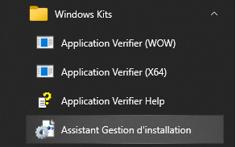
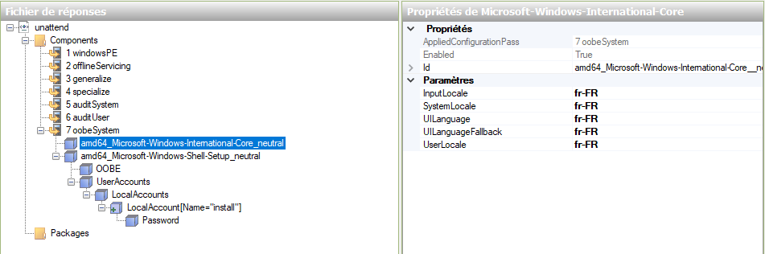
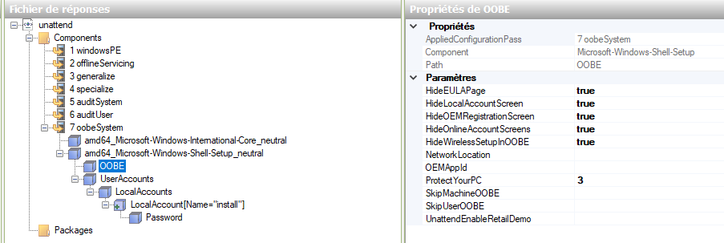
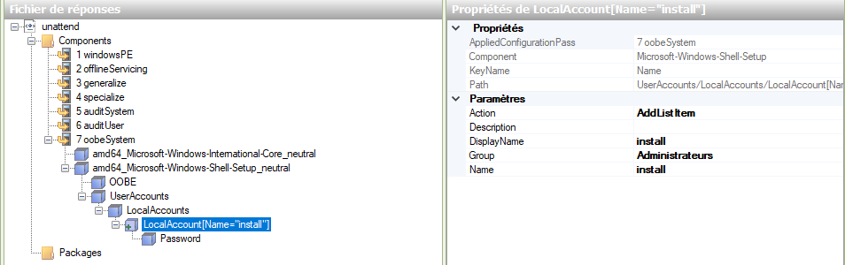
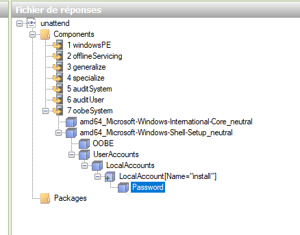

Situation 1 - Deploy
Déploiement de Poste de Travail
Introduction
Le déploiement de postes de travail est une étape essentielle dans la gestion d'un parc informatique, qu'il soit hétérogène ou homogène. Il existe plusieurs technologies et outils qui facilitent ce processus, chacun ayant ses avantages et inconvénients. Dans ce cours, nous allons comparer différentes solutions de déploiement et discuter des spécificités liées à Windows.
Déploiement sur des Parcs de Machines Hétérogènes et Homogènes
Définition
Un parc de machines hétérogènes regroupe des ordinateurs avec des configurations matérielles variées. Un parc de machines homogènes regroupe des ordinateurs avec des configurations matérielles similaires.
| Parcs de Machines Homogènes | Parcs de Machines Hétérogènes | |
|---|---|---|
| Avantages | - Facilité de gestion et de maintenance. | - Flexibilité pour gérer différents types de matériel. |
| - Réduction des incompatibilités matérielles. | - Possibilité d'optimiser les ressources en fonction des besoins. | |
| Inconvénients | - Limitation dans la diversité des matériels pris en charge. | - Complexité accrue dans la gestion et la maintenance. |
| - Problématique des pilotes (drivers) : - Les différentes machines peuvent nécessiter des pilotes spécifiques. - Gestion des pilotes multiples pour différentes configurations. - Risque de conflits ou d'incompatibilités de pilotes. |
Spécificités de Windows et Préparation du système
Sysprep
Sysprep
Sysprep est un petit logiciel inclus dans Windows (C:\Windows\System32\Sysprep) qui joue un rôle essentiel dans le déploiement de postes de travail. Il permet de préparer une installation Windows pour la duplication sur d'autres machines en généralisant le système, ce qui signifie qu'il supprime toutes les informations spécifiques à la machine (identificateurs, noms, SID, etc.) et prépare le système à être configuré au premier démarrage.
Problèmes d'Identificateurs Uniques : Lorsque vous dupliquez une image Windows sans utiliser Sysprep, chaque poste de travail obtient les mêmes identificateurs uniques, ce qui peut entraîner des conflits et des problèmes graves. Les principaux problèmes liés aux identificateurs uniques sont les suivants :
-
SID (Security Identifier) : Les SID sont des identificateurs de sécurité uniques pour chaque machine. En cas de duplication sans Sysprep, plusieurs machines peuvent avoir le même SID, ce qui peut entraîner des problèmes de sécurité et de gestion des utilisateurs.
-
Certificats et Clés de Licence : Les certificats et les clés de licence liés à la machine peuvent devenir invalides en cas de duplication sans Sysprep, ce qui peut entraîner des problèmes de licence et de fonctionnement.
En utilisant Sysprep, vous résolvez ces problèmes en permettant à chaque machine déployée d'avoir ses propres identificateurs uniques, ce qui garantit un fonctionnement correct et une gestion facile du parc informatique. Sysprep est donc une étape essentielle dans le processus de déploiement de postes de travail sous Windows.
Exemple d'usage de sysprep:
C:\windows\system32\sysprep>sysprep /oobe /generalize /shutdown /unattend:<responsefile>
le fichier de réponse (ici responsefile) doit avoir été généré avec l'aide du logiciel ADK https://learn.microsoft.com/fr-fr/windows-hardware/get-started/adk-install. L'Acronyme ADK signifie "Windows Assessment and Deployment Kit" (Kit d'évaluation et de déploiement Windows )
Multicast et Problématiques liées à la Diffusion sur VLANs
Multicast
Définition : Le multicast est une méthode de diffusion de données à un groupe de destinataires simultanément.
Problématiques liées à la diffusion sur VLANs :
- Gestion des routages entre les VLANs.
- Assurer que les trames multicast atteignent tous les VLANs concernés.
Pour se simplifier la vie (le routage multicast n'est pas du niveau d'un BTS), nous utiliserons donc les solutions de deploiement multicast dans un vlan dédié à cela dans notre laboratoire. Pour vos TP cela signifie que vous utiliserez un réseau privé sur VirtualBox et non un réseau en mode bridge ou Nat. Les VMs ne devront pouvoir communiquer que par ce réseau privé (vlan géré par VirtuualBox sur son VSwitch).
Par ailleurs vous ferez en sorte que les postes à déployer obtiennent leurs configurations IP de la part du serveur de deploiement qui fera donc office de serveur DHCP en configurant correctement les options du boot PXE.
Options de Boot PXE
PXE
PXE (Preboot Execution Environment) permet de démarrer un ordinateur depuis le réseau.
Les options DHCP 66 et 67 sont des paramètres de configuration couramment utilisés dans les réseaux pour faciliter le déploiement de systèmes d'exploitation ou d'autres logiciels à partir d'un serveur de déploiement. Voici une explication détaillée de chacune de ces options :
Option 66 - Serveur TFTP (Trivial File Transfer Protocol):
L'option 66 est utilisée pour spécifier l'adresse IP ou le nom d'hôte du serveur TFTP auprès duquel un client DHCP doit télécharger des fichiers de configuration ou des fichiers de démarrage (boot files), on parle alors de boot PXE.
Le serveur TFTP est généralement utilisé pour transférer des fichiers de démarrage ou des fichiers de configuration nécessaires lors du déploiement de systèmes d'exploitation, tels que des fichiers de configuration de PXE (Preboot Execution Environment) pour amorcer des systèmes via le réseau.
Lorsqu'un client DHCP reçoit l'option 66, il sait où se trouve le serveur TFTP et peut initier le téléchargement des fichiers nécessaires à partir de cette source.
Option 67 - Nom du Fichier de Démarrage :
L'option 67 est utilisée pour spécifier le nom du fichier de démarrage (boot filename) que le client DHCP doit demander au serveur TFTP spécifié dans l'option 66.
Ce nom de fichier de démarrage est généralement associé à un système d'exploitation ou à un programme de démarrage spécifique que le client doit charger à partir du serveur TFTP.
Par exemple, lorsqu'un client DHCP reçoit l'option 67 avec la valeur "pxelinux.0", il sait qu'il doit demander ce fichier au serveur TFTP spécifié dans l'option 66 pour amorcer un système via PXE.
La valeur de cette option est donc dépendante de la solution de deploiement choisie.
En résumé, les options DHCP 66 et 67 sont couramment utilisées dans les déploiements réseau pour fournir aux clients DHCP les informations nécessaires pour amorcer des systèmes à partir de la carte réseau ou effectuer des opérations de configuration spécifiques à partir d'un serveur TFTP. Ces options sont essentielles dans les environnements de déploiement et de gestion de parc informatique.
Mise en place de FOG et WDS
Pour capturer une image d'un Master avec FOG il est nécessaire de générer avant sur le master un fichier de réponse XML. Ce fichier ce génère avec l'outil gratuit fourni par Microsoft ADK.
Il permet de sauter les différentes étapes de personnalisation de l'installation et d'automatiser les réponses (choix du clavier, création d'un compte utilisateur etc...) de windows nottament pour l'Out Of Box Experience (Experience de sortie de carton quand windows est préinstallé sur la machine, donc au premier démarrage de la machine).
Vous trouverez ci joint un exemple de configuration fonctionnelle permettant de générer un fichier de réponse valide (Win 10 Education pro).
A noter qu'il est indispensable de copier le fichier install.wim issue de l'iso sur le poste Master.
Creation du fichier de réponse (avec ADK)





FOG + ADK
Le meilleur compte rendu sera publié ici
WDS + MDT
WDS ne se base pas sur un poste Master, l'image install.wim est stocké sur le serveur de déploiement. La personnalisation du fichier de réponse se fait via l'usage de MDT lui aussi installé sur le serveur de déploiement (WDS). Le logiciel ADK est donc inutile lors de l'utilisation de WDS.
A noter: Le service WDS intègre son propre service DHCP, qui n'est pas le service DHCP classique de windows serveur.
Le meilleur compte rendu sera publié ici
Conclusion
Le déploiement de postes de travail est une étape cruciale dans la gestion informatique. Le choix de la solution dépendra de la nature de votre parc de machines, de vos besoins spécifiques et de vos compétences.